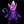

| - | Character | Speed | - | - | Score | - |
|---|---|---|---|---|---|---|
| Aria | 14:37.61 | 360th | 3417 | 1475th | ||
| Bard | 5:13.36 | 175th | 24267 | 53rd | ||
| Bolt | 20:06.21 | 1173rd | 2727 | 665th | ||
| Cadence | 7:27.06 | 174th | 9978 | 1055th | ||
| Diamond | 12:02.99 | 385th | - | - | ||
| Dorian | 13:50.78 | 439th | 1619 | 1837th | ||
| Dove | 7:30.09 | 448th | 397 | 1843rd | ||
| Eli | 11:28.08 | 150th | 2142 | 3138th | ||
| Mary | - | - | 2161 | 1828th | ||
| Melody | 8:22.07 | 227th | - | - | ||
| Monk | 13:47.58 | 158th | 5232 | 967th | ||
| Nocturna | 9:44.84 | 161st | 13256 | 529th | ||
| Tempo | 8:46.94 | 360th | 4498 | 949th | ||
|  | Coda | - | - | - | - | |
| Story | 1:02:54.97 | 141st | 11006 | 1065th | ||
| 9char | - | - | - | - | ||
| 13char | - | - | - | - |
| - | Character | HrdSp | NRSp | RndSp | PhsSp | MysSp | - | HrdSc | NRSc | RndSc | PhsSc | MysSc | DLess |
|---|---|---|---|---|---|---|---|---|---|---|---|---|---|
| Aria | - | - | - | - | - | - | - | - | - | - | - | ||
| Bard | 43:40.27714th | 23:24.21192nd | 11:51.8390th | 15:58.47302nd | - | 2037916th | 4711139th | 48481447th | 6125138th | - | - | ||
| Bolt | - | - | - | - | - | - | - | - | - | - | - | ||
| Cadence | - | 16:03.23121st | 13:54.6665th | - | 22:29.94129th | - | 27951359th | 34171775th | - | 2469611th | 13-1-262nd | ||
| Diamond | - | - | - | - | - | - | - | - | - | - | - | ||
| Dorian | - | - | - | - | - | - | - | - | - | - | - | ||
| Dove | - | - | - | - | - | - | - | - | - | - | - | ||
| Eli | - | - | - | - | - | - | - | - | - | - | - | ||
| Mary | - | - | - | - | - | - | - | - | - | - | - | ||
| Melody | - | - | - | - | - | - | - | - | - | - | - | ||
| Monk | - | - | - | - | - | - | - | - | - | - | - | ||
| Nocturna | 32:04.311295th | - | - | - | - | 29533662nd | - | - | - | - | - | ||
| Tempo | - | - | - | - | - | - | - | - | - | - | - | ||
| Coda | - | - | - | - | - | - | - | - | - | - | - |
Last Updated:2021/06/02 13:37